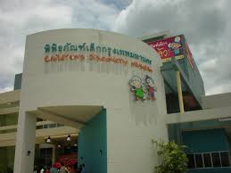
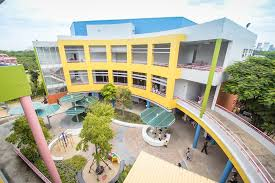

พิพิธภัณฑ์เด็กกรุงเทพมหานคร จัดตั้งขึ้นตามพระราชปรารภในสมเด็จพระนางเจ้าสิริกิติ์ พระบรมราชินีนาถ ที่มีพระราชประสงค์ให้เด็กไทยได้เรียนรู้อย่างเพลิดเพลินในรูปแบบของพิพิธภัณฑ์เด็ก

ข้อมูลพิพิธภัณฑ์
กรุงเทพมหานคร ได้สนองพระราชปรารภดังกล่าว และจัดตั้งพิพิธภัณฑ์เด็กกรุงเทพมหานคร แห่งที่ 1 (จตุจักร) บนพื้นที่ 7 ไร่ ส่วนหนึ่งของสวนสมเด็จพระนางเจ้าสิริกิติ์ พระบรมราชินีนาถ และเปิดให้บริการเมื่อวันที 17 สิงหาคม พ.ศ.2544 หลังจากเปิดดำเนินการไปแล้ว 9 ปี กรุงเทพมหานคร ได้ปรับปรุงพิพิธภัณฑ์เด็ก ให้มีรูปแบบการเรียนรู้ที่ทันสมัยภายใต้แนวคิด “Learning for Young Creative Mind” ที่เน้นกระบวนการเรียนรู้ (Method of Learning) ที่มีแรงจูงใจ (Motivation) ทีหลากหลาย สอดคล้องกับพัฒนาการและศักยภาพของเด็ก โดยคัดสรรสาระความรู้ที่เหมาะสมเพื่อบ่มเพาะจิตสร้างสรรค์ให้เกิดขึ้น
บริหารจัดการ
หน่วยงานราชการ
ประเภทพิพิธภัณฑ์
อื่นๆ